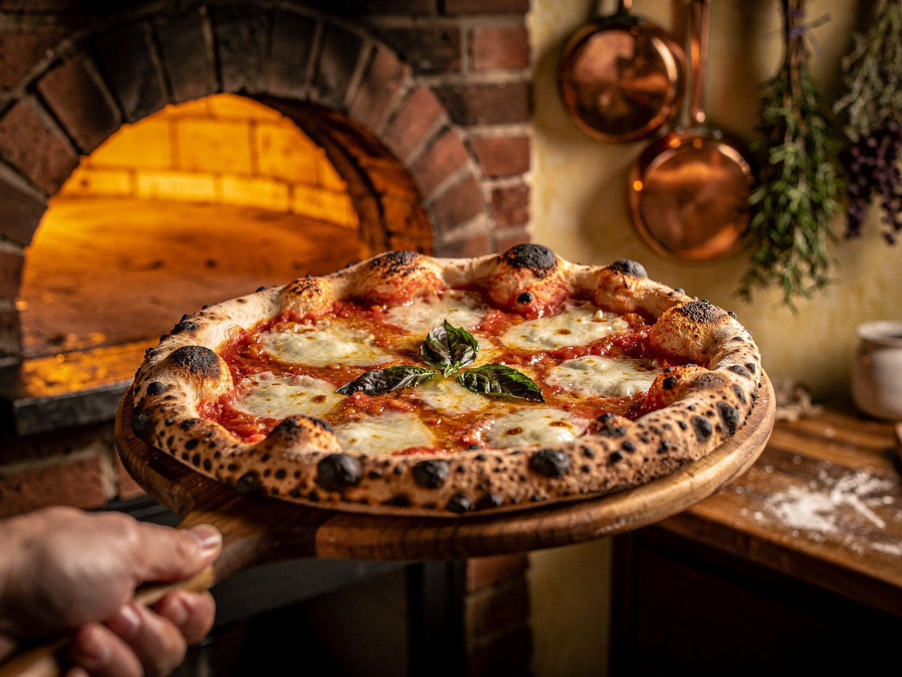

Neapolitan Pizza Margherita Recipe
Home Page
A classic neapolitan pizza recipe. Simple, Fresh, and Delicious. Perfect for a weekend dinner!

Ingredients
- Pizza dough (store-bought or homemade)
- San Marzano tomatoes (crushed)
- Fresh mozzarella cheese
- Fresh basil leaves
- Extra virgin olive oil
- Salt
Instructions
- Preheat your oven to the highest setting (usually 250°C or 500°F)
- Stretch the pizza dough into a circle on a floured surface
- Spread the crushed tomatoes evenly over the dough
- Tear the fresh mozzarella into small pieces and distribute them on top
- Drizzle with olive oil and add a pinch of salt
- Bake for 7-10 minutes until the crust is golden brown
- Remove from oven and top with fresh basil leaves before serving
recipe adapted from AI-generated text